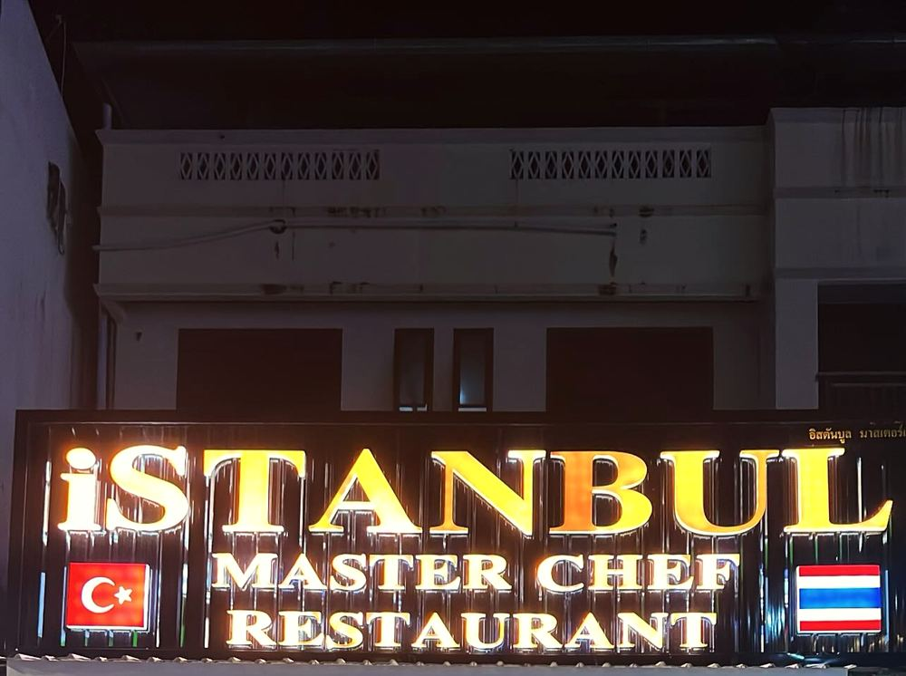

İstanbul MasterChef
Pide, kebab and Turkish breakfast. The tea is on the house.
The tea is on us.
Unlimited Turkish tea comes with your meal, in the tulip glass, the way it is served at home. Ask Mustafa for a Turkish coffee too.

Chaweng Beach Road, Chaweng, Koh Samui. Every day from 10 in the morning to 2 at night. Kids' menu, high chairs and free Wi-Fi.